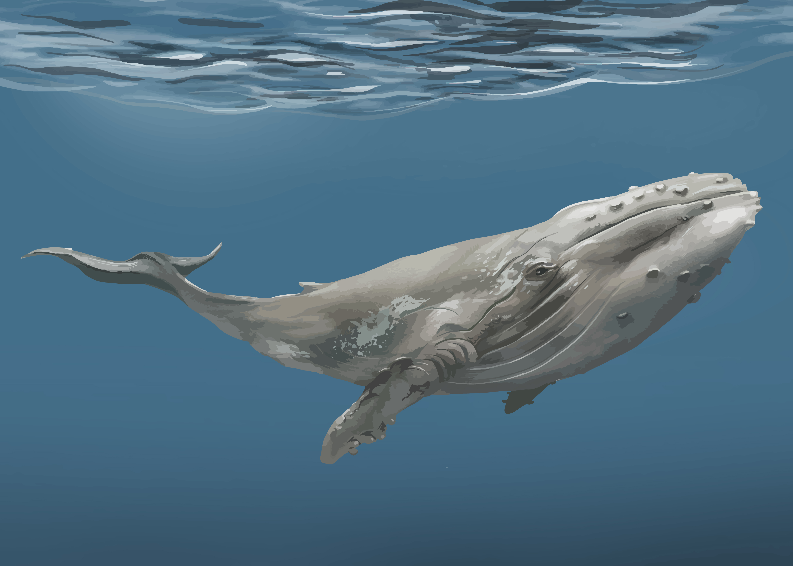

常見的鯨魚種類

藍鯨
分布：全球大洋
體型：可達 30 公尺、180 公噸
地球上最大的動物，主要以磷蝦為食。

抹香鯨
分布：深海區域
體型：可達 20 公尺、57 公噸
齒鯨中體型最大，能下潛超過 2000 公尺捕食烏賊。

座頭鯨
分布：熱帶至極地海域
體型：約 16 公尺、30 公噸
以悠長動聽的「鯨歌」著稱，是賞鯨重要物種。
鯨魚是地球上最大的哺乳動物，橫跨全球海洋。本知識庫帶你深入了解牠們的生態與保育。
分布：全球大洋
體型：可達 30 公尺、180 公噸
地球上最大的動物，主要以磷蝦為食。
分布：深海區域
體型：可達 20 公尺、57 公噸
齒鯨中體型最大，能下潛超過 2000 公尺捕食烏賊。
分布：熱帶至極地海域
體型：約 16 公尺、30 公噸
以悠長動聽的「鯨歌」著稱，是賞鯨重要物種。
鯨魚象徵力量與守護，原住民族傳說中常描繪鯨魚守護漁民，現代賞鯨活動促進生態旅遊。
約 5,000 萬年前：早期鯨魚出現於海洋
約 3,500 萬年前：齒鯨與鬚鯨分化
約 2,000 萬年前：大型鯨魚族群出現
現代：部分鯨魚族群恢復，但仍需保育
鯨魚透過背部噴氣孔呼吸，每隔幾分鐘上浮一次換氣。
齒鯨捕食魚類與烏賊，鬚鯨主要濾食磷蝦與浮游生物。
部分鯨魚長距離遷徙，高緯度覓食、低緯度繁殖。
通常每 2-3 年產一次幼鯨。
幼鯨可能被虎鯨或鯊魚攻擊，成鯨幾乎沒有天敵。
藍鯨可活 80-90 年，抹香鯨約 70 年。
會，齒鯨用回聲定位，鬚鯨會唱「鯨歌」。
鯨魚排泄物促進浮游生物生長，有助碳循環。
建立保護區、禁止商業捕鯨、推動海洋教育。
台灣東北角及墾丁沿岸有賞鯨活動，也可參觀海洋館了解鯨魚。